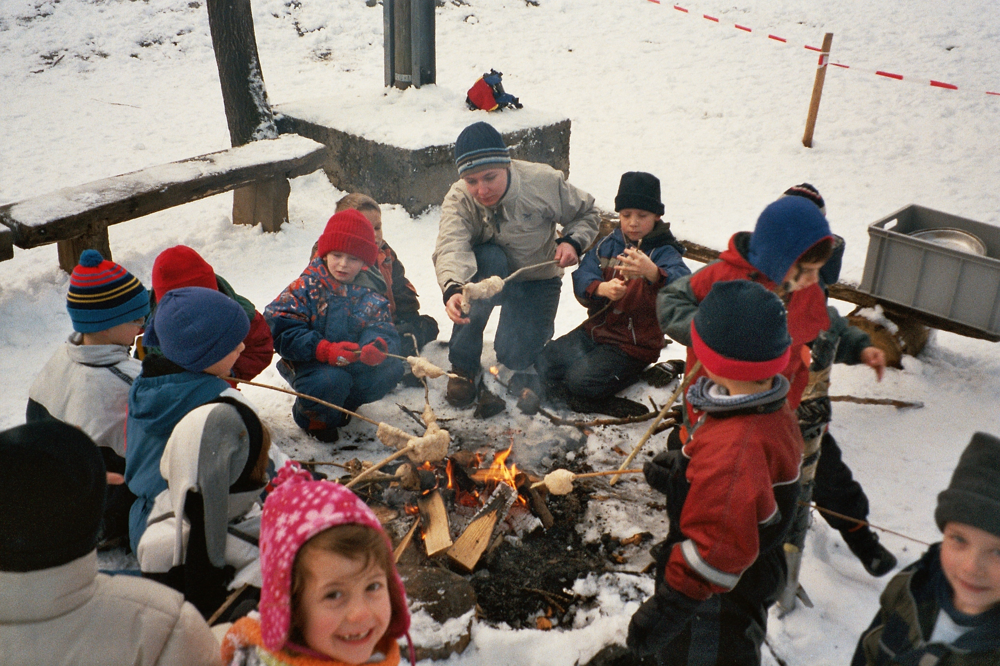
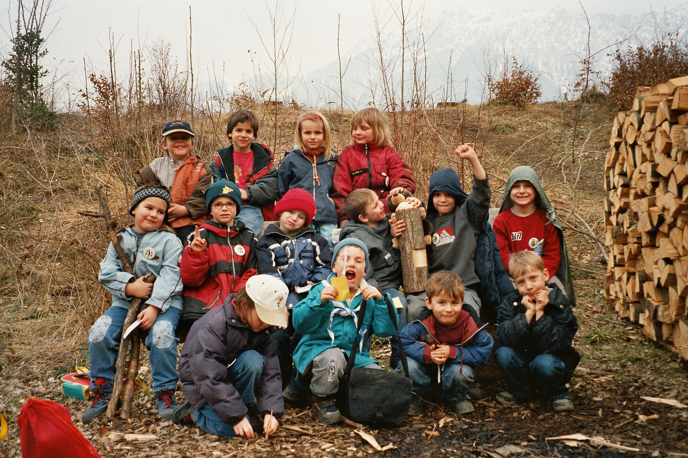
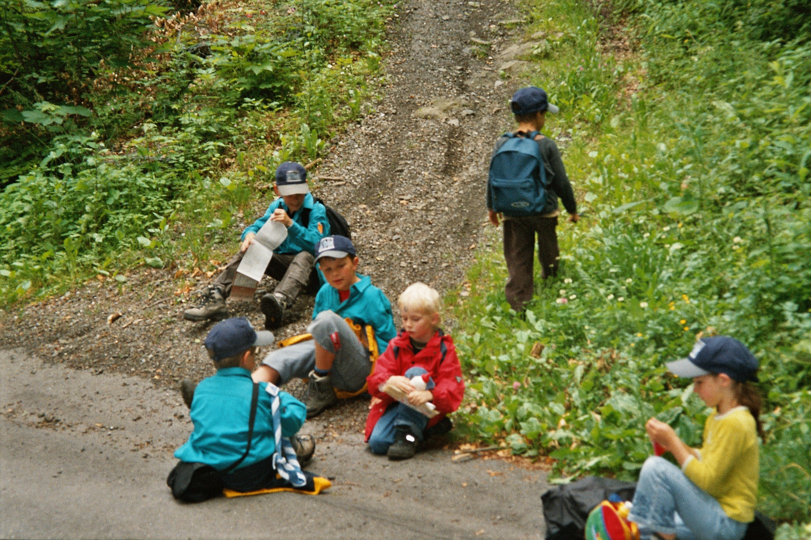

24.01.2004

Pünktlich am halbi zwei hän sich dia allerersta Biber vo dr'Pfadi Alvier im Schneggenbödeli troffa. Noch dä ersta paar Begrüassigswort sin mier dänn zum chli aklimatisiera ins Pfadiheim go d'Gschicht vor Ronja losa. d'Ruah vo dä schiinbar chli schücha Biber isch mit am Endi vor Gschicht dänn au gli verbi gsi. Wie sich's für an richtiga Pfadfinder ghört sind mier dänn au sofort wiider verusa an dia frischi Luft und hän i zwei Gruppa dä Wald chli unsicher gmacht. D'Ronja (Gruppa I) hät im Wald dä Birk (Gruppa II) entdeckt und ihn versuacht izohla. Doch no isch dä Birk schnäller gsi, was sich ja während dä nächsta Üabiga no chan ändera. Gmeinsam hän mir dänn no chli gführlet und versuacht feins Schlangabrot am Stägga z'brötla, was sich leider chli schwiiriger usagstellt hät, als mir gmeint hän. Aber s'hän ja alli Händscha agha und somit sind d'Finger au nid würggli dräckig worda.

13.03.2004

Endlich wiider an Samstig wo au für üs Biber a Üabig stattfindet. Das mol kennen mir üs scho super us und mir bruchen kaj Agwöhnigszyt me. So teilen üs d'Leiter in drü Gruppa uf wo dänn au nöj als üsi Biberbauta gelten. Mir machen üs ufa Wäg zur Schwyzerfamiliafüürstell. Döt hät sich jede Bau (Ahorn, Eiche & Lerche) a Burg baua wo als neutrali Zona gilt. Dänn isch dä Kampf um d'Burga los ganga. Mit am Kim-Spili und ma Wettrenna hän sich die junga Burgkämpfer chöna Ballön erkämpfa. Notürli hän dia jez au no in dia eiga Burg zrugg müassa, was dummerwis nid ganz so eifach ganga isch, do's ja ufam Wäg döt hära no's paar anderi Burgbewohner gha hät wo dia Ballön hän wela stritig macha. Dä Biberbau Ahorn hät am Schluss am meista Pünkt gha und somit als ersti dä kuli Wanderpokal gwunna. Nochdäm sich alli an dä feina Fruchtplatta gstärkt gha hän, hät sich dia ganzi Bandi friidlich wiider ufa Wäg zrugg zum Pfadiheim gmacht.

Sing Sang und Jodelfest uf dä Mathis Burg
15.05.2004

Nochdäm mir letscht Samstig s'Schloss Werdenberg unsicher gmacht hän und alli Schätz mit üs gno hän, isch jez notürli wichtig au z'wüssa wia ma so richtig fiiret. Wia sicher jedem bekannt isch, bruchts für so as traditionells Burgfäst zerschmol as richtigs Füür. Das isch für üsi Biber überhaupt kajs Problem me. Alli sammlen fliissig s'Holz zäma und scho chan's los go. Währed däm s'Füürli dänn brennt, wird chräftig gsunga. Notürli hät das an ganz guata Grund, wiiso bi däm Sing Sang und Jodelfest alli so fliissig mitmachen. In as paar Wucha isch nämli s'Pfila und ans Sunntigslagerfür sind notürli au alli Biber herzlich iglada. Döt chön mier dänn zeiga dass mir scho richtigi Pfadis sind und dia Liedli und Singspili vilech sogar scho besser chönd als üsi ältera Vorbilder. Nochdäm dä Biberbau Eiche eimol me dä Wanderpokal gwunna hät, hän mir üs au hüt an ussergwöhnlicha Z'vieri verdient. So versuachen mir as Schoggifondü uf am Füür. D'Schoggi will zwar nid so ganz wia mir, aber trotzdäm isch's mega fein. Also bis bald am Lagerfür vom PFILA 2004.
19.06.2004

Endlich mol wiider an Samstig mit Pfadi. Doch chum hän mier Aträtta gha, hät an Räuber dä Leiter ihra Sack mit dä Üebigsutensilia gstohla. Notürli hän mier üs sofort uf d'Spur vo däm Diab gmacht und drmit mir däm dänn au Meister mögen, hän sich d'Erststüfler üs gad agschlossa. Zum Glück hät dä Sack as Loch gha und so hät dä Räuber ständig wiider öpis verlora und mir hän ihm chöna uf dä Värsa bliiba. Nochra elendlanga Verfolgigsjagd hät dä Wäg ins "Wildamannalöchli", d'Höhli im Buchserberg gfüahrt. Jez isch är i dä Falla gsässa. Ein noch am andera isch jez in d'Höhli krocha. Ganz ghür isch's dänn Biber, Wölfli und Bienli scho nid gsi. Aber in dä dunkla Höhli hät dänn as paarna vo üs no a Überraschig blüaht. Dä Räuber isch nämli gar nid so bös gsi wia mir zersch gmeint hän, vilech hät är aber au nur Angst übercho. Är hät dänn also einiga vo üs a Urkund übergä und diajeniga hän jez endlich dä langersehnti Pfadinama u chön mega stolz drufsi, dänn dä bliibt eim jo as Läbalang u bestätigt zuaghörigkeit zu dä Pfadis. Notürli hät's vom Räuber au no an feina z'Vieri gä bevor mir üs wiider ufa Ruckwäg zum Pfadiheim gmacht hän. Döt sin mier dänn alli ziemli gschafft aber mit erhobnem Chopf acho...schliesslich fangt ma ja nid all Tag an "bösa" Dieb.
